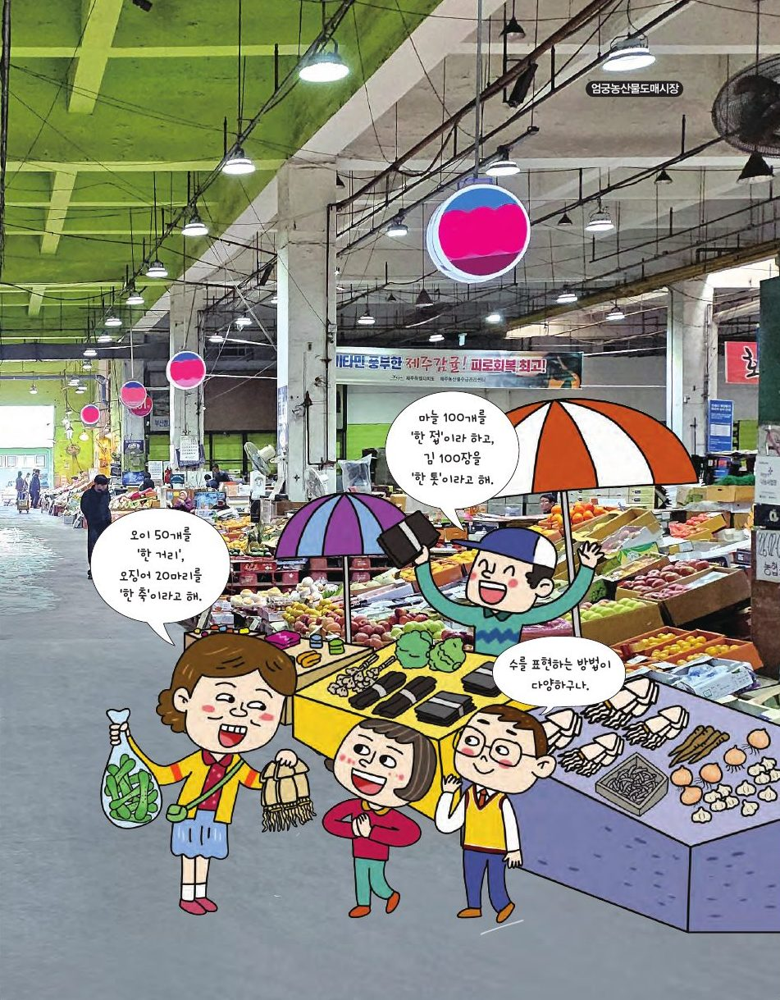

마늘 100개는 '한 접', 오징어 20마리는 '한 축'. 수를 나타내는 방법은 다양해요. 0과 1만으로 모든 수를 나타내는 이진법으로 마술도 하고 암호도 만들어 봐요.
★ 이 단원에서는 — 이진법의 뜻을 알고, 다양한 문제를 해결할 수 있다.

📍 엄궁농산물도매시장마음속으로 수를 하나 생각하세요. 마술사가 카드를 보여주면 그 수가 있는지 '예 / 아니요'로만 답하세요.
카드 k에는 "이진법으로 나타냈을 때 2^(k−1) 자리가 1인 수"가 들어 있어요. 6 = 4 + 2 = 110₍₂₎이므로 2와 4의 카드에만! '예'라고 답한 카드들의 첫 칸 수를 더하면 생각한 수가 돼요.
길이가 1, 2, 4, 8인 막대가 하나씩 있어요. 막대를 골라 이어 붙여 볼펜의 길이를 재어 보세요.
1, 2, 4, 8로는 1~15 전부(15가지)! 모든 수는 2의 거듭제곱의 합으로 한 가지로 나타내지니까요(이진법). 1, 3, 9로는 더하기만 해서는 2, 5, 6, 7, 8… 을 못 재요. 하지만 양팔저울처럼 빼기도 허용하면(3−1=2, 9−3−1=5…) 1~13을 모두 잴 수 있어요.
A=1, B=2, … Z=26. 각 수를 1, 2, 4, 8, 16의 합으로 나타내고, 쓰인 수의 전구만 켜요. 전구를 눌러 켜고 끄면 어떤 글자인지 알 수 있어요.
전구 하나마다 켜짐/꺼짐 2가지 → 5개면 2⁵ = 32가지(0~31). 6개면 64가지. 컴퓨터가 0과 1로 글자를 저장하는 원리와 같아요.
바빌로니아는 60진법(60초=1분, 60분=1시간이 그 흔적), 마야는 20진법, 이집트는 10의 거듭제곱 상형문자를 썼어요.